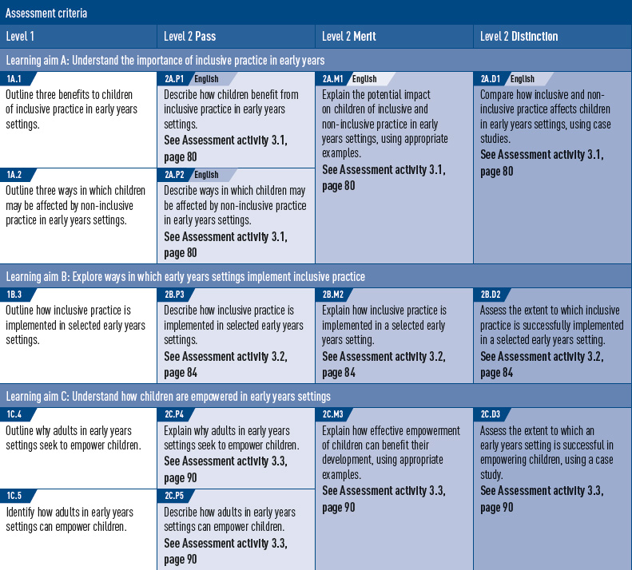

UNIT
3
The Principles of Early Years Practice
BTEC
Assesment Zone
This table shows what you must do in order to achieve a
Pass, Merit
or
Distinction
grade, and where you can find activities in this book to help you.
